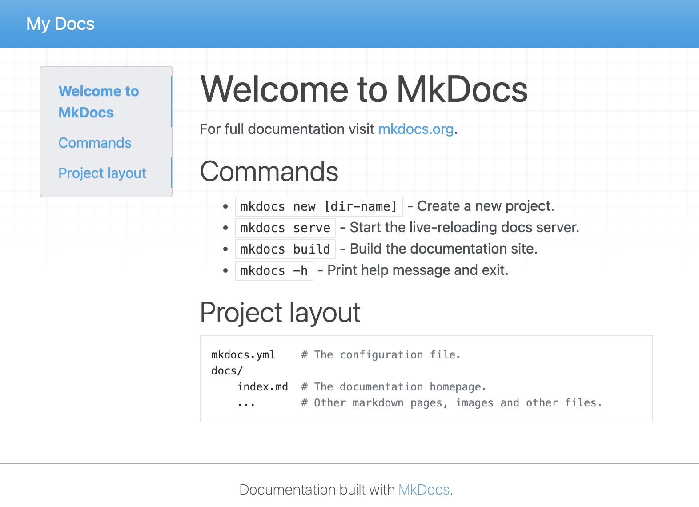
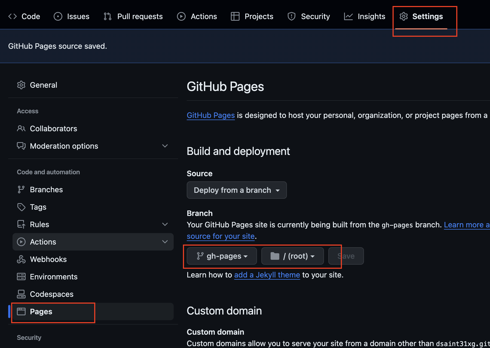

MkDocs 에 대해서.
Jekyll, shinx, read docs 등과 함께 대표적인 static site generator (정적 사이트 생성기) 로 정적인 웹문서 위주의 사이트를 만드는데 적합한 tool임.
장점.
Python과 Markdown에 익숙한 사용자의 경우, 매우 간단하게 정적인 문서로 구성된 사이트를 생성할 수 있음.
github.com의 페이지 github.io와 연동도 지원함 (기본으로 제공되는 Jekyll 만큼 간단함.)
Jekyll 과의 비교.
Ruby로 작성된 Jekyll에 비해 보다 쉬운 환경설정을 자랑하는 MkDocs 임.
단, Jekyll은 개인 블로그나 웹사이트에 보다 적합하며 플러그인 등에서 보다 지원이 큰 편임. 때문에 MkDocs에 비해 높은 자유도의 옵션을 제공하지만 보다 높은 학습량을 요구함.
Install MkDocs
conda 를 이용한 설치를 가정함.
conda 이용한 mkdocs 설치
terminal에서 다음의 명령어를 입력하면,
conda를 이용하여 mkdocs라는 가상환경을 만들고, 여기에 mkdocs를 설치함.
conda create -n mkdocs -c conda-forge mkdocs
mkdocs 프로젝트 생성.
new 를 이용하여 mkdocs로 문서 사이트를 관리하기 위한 mkdocs 프로젝트 경로를 생성함.
다음은 ce라는 directory가 생성되고 해당 디렉토리가 mkdocs로 문서들을 만들고 관리하는 작업 프로젝트의 root directory가 됨.
mkdocs new ce
위 명령어 결과로 다음의 direcgtory 구조의 ce가 생성됨.
ce
├── docs
│ └── index.md
└── mkdocs.yml
동작 확인.
우선 작업 디렉토리 ce로 들어가서 정상 설치되었는지를 다음 명령어로 확인.
cd ce
mkdocs serve
다음과 같은 메시지가 나오고 로컬 서버에서 mkdocs로 만들어진 문서 사이트가 서비스 됨.
❯ mkdocs serve
INFO - Building documentation...
INFO - Cleaning site directory
INFO - Documentation built in 0.03 seconds
INFO - [21:51:00] Watching paths for changes: 'docs', 'mkdocs.yml'
INFO - [21:51:00] Serving on http://127.0.0.1:8000/``
이후, http://127.0.0.1:8000 URL을 웹브라우저로 확인 가능함.

문서 사이트 build하기.
다음의 명령어를 수행할 경우 문서사이트의 파일들(html 등등)이
site 라는 이름의 sub-directory에 생성됨.
mkdocs build
그 결과는 다음과 같음.
ce
├── docs
│ └── index.md
├── mkdocs.yml
└── site
├── 404.html
├── css
│ ├── base.css
│ ├── bootstrap.min.css
│ └── font-awesome.min.css
├── fonts
│ ├── fontawesome-webfont.eot
│ ├── fontawesome-webfont.svg
│ ├── fontawesome-webfont.ttf
│ ├── fontawesome-webfont.woff
│ └── fontawesome-webfont.woff2
├── img
│ ├── favicon.ico
│ └── grid.png
├── index.html
├── js
│ ├── base.js
│ ├── bootstrap.min.js
│ └── jquery-3.6.0.min.js
├── search
│ ├── lunr.js
│ ├── main.js
│ ├── search_index.json
│ └── worker.js
├── sitemap.xml
└── sitemap.xml.gz
8 directories, 23 files
Github의page와 연동.
mkdocs의 문서 프로젝트의 root (위의 예에선 ce) 에서 다음의 명령어로 github의 repository와 연결.
- 반드시 연결될 github의 remote repository는 public이여야함.
git init
git add .
git commit -m "first commit"
git remote add origin <github의 repository 주소>
git branch -M main
git push -u origin main
이후, 다음 명령어로 gh-deploy 브랜치로 생성된 문서 사이트를 push.
mkdocs gh-deploy
일반적으로 ssh 키로 해당 remote repository에 접근 가능한지 확인하기 위해 중간에 ssh키에 대한 암호를 물어봄.
결과는 다음과 같음
INFO - Cleaning site directory
INFO - Building documentation to directory: /Users/dsaint31/Desktop/lectures/dsaint31xg/ce/site
INFO - Documentation built in 0.04 seconds
INFO - Copying '/Users/dsaint31/Desktop/lectures/dsaint31xg/ce/site' to 'gh-pages' branch and pushing to GitHub.
Enter passphrase for key '/Users/dsaint31/.ssh/id_rsa':
Enumerating objects: 17, done.
Counting objects: 100% (17/17), done.
Delta compression using up to 8 threads
Compressing objects: 100% (8/8), done.
Writing objects: 100% (9/9), 792 bytes | 792.00 KiB/s, done.
Total 9 (delta 6), reused 0 (delta 0), pack-reused 0
remote: Resolving deltas: 100% (6/6), completed with 6 local objects.
To github.com-dsaint31xg:dsaint31xg/ce.git
4a6aacd..8aac8de gh-pages -> gh-pages
INFO - Your documentation should be available shortly.
이후 github의 대상 remote repository에서 settings 에서
Pages를 선택하고, Build and deployment 에서 gh-pages 브랜치에서 서비스 되도록
아래 그림과 같이 설정을 바꿔줌.

* dsaint31xg가 github의 id임.
* ce가 remote repostory의 이름.
* 이 경우, git@github.com:dsaint31xg/ce.git이 <github의 repository 주소> 임(ssh사용의 경우)
이후 <github_user_id>.github.io/<remote repository의 이름> URL에서 서비스 됨.
- 이 경우,
dsaint31xg.github.io/ce의 URL에서 서비스 됨.